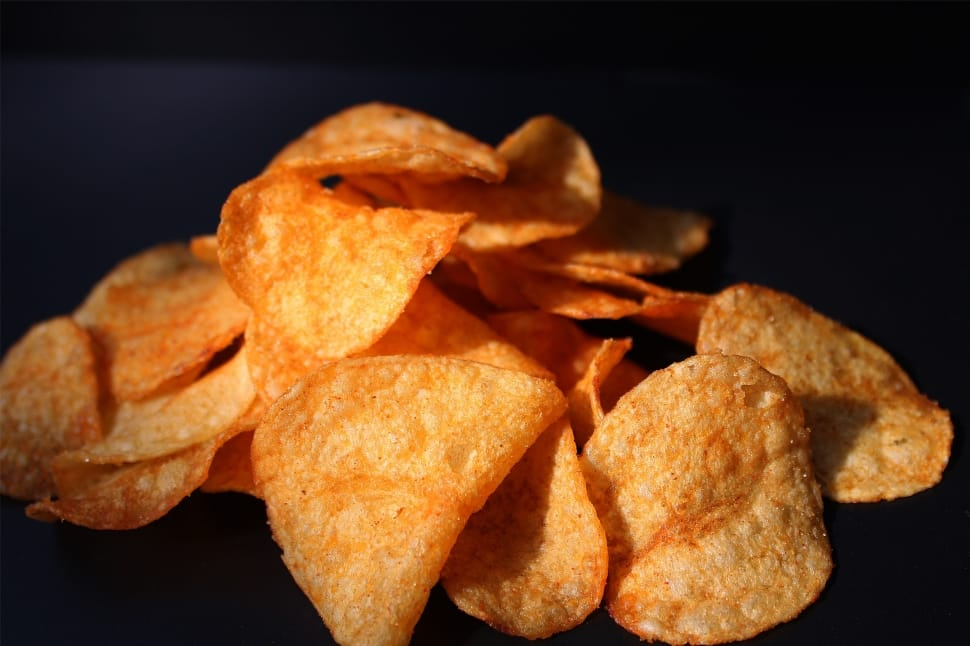
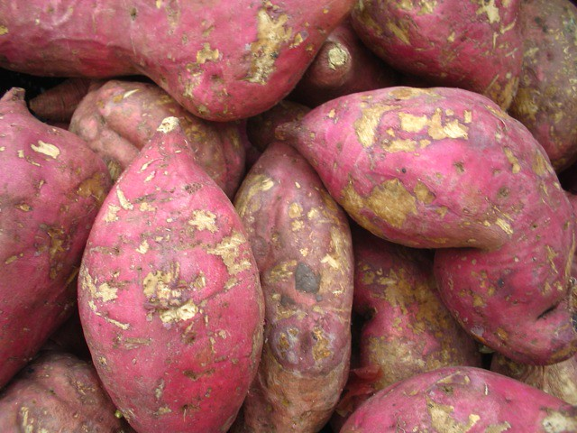

Deja tus Comentarios
Beneficios de Consumir las Chips de Camote
Entre los beneficios se encuentran:
- Posee gran cantidad de fibra digerible, que acelera el tránsito intestinal.
- Previene el cáncer de colon.
- Controla el nivel de azúcar.
- Baja el colesterol y produce sensación de saciedad.
- Su piel y pulpa poseen antioxidantes, por lo que previene enfermedades cardíacas, diabetes y cáncer.

